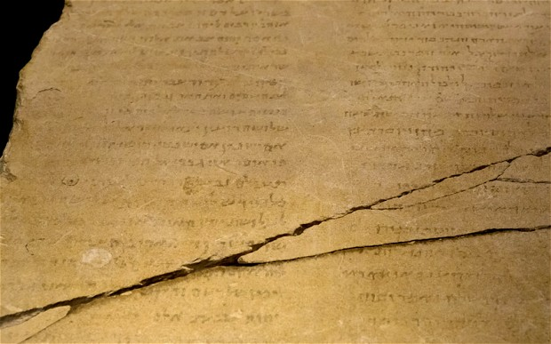

Blindtext
Second 'Gabriel Stone' may exist, says scholar
A second Gabriel Stone, the controversial tablet discovered 13 years ago which raises the prospect of a messiah-like figure that predated Jesus, may exist, according to a world-renowned Israeli scholar. (SEE ORIGINAL)

Professor Israel Knohl, a Bible scholar at the Hebrew University in Jerusalem told The Telegraph he believes a second "Gabriel Stone" fragment is still out there, waiting to be discovered.
The "Gabriel Stone," a three foot tall tablet found 13 years ago in Jordan by Bedouin tribesmen, dates back to the time of the Dead Sea Scrolls and the Second Temple period. It was recently put on display for the first time in Jerusalem's much-vaunted Israel Museum, reigniting controversy over the precious artefact among rival scholars.
Prof Knohl has been at the centre of the controversy ever since 2008, when he deciphered a crucial line overlooked by other academics where God calls upon his "son" to "come back to life" – an indication of clear Messianic overtones.
"It is very much possible that the text was written on two stones, especially since the language includes references to a New Testament or Covenant", said Prof Knohl. "It could be that it was made in tablet form to imitate the idea of the two tablets of the Ten Commandments given to Moses at Mount Sinai."
According to Prof Knohl, the telltale sign of an additional piece lies in the fact that there is a clear break in the upper-right corner of the stone.
"We simply don't know if the text on the Gabriel stone we have now is the full composition", he said.
Prof Knohl said he was so certain of his theory that he led an extended archaeological trip himself to Jordan to try to find the second piece, but ultimately was unsuccessful.
"I tried as much as I could myself, we looked everywhere and spoke to as many people in Jordan as possible, but we couldn't find anything."
He says he remains hopeful that in the future archaeologists or technology experts in the field of high-definition photography will be able to make additional breakthroughs.
"If anyone can think of a new technology or an idea to improve our readings please come and tell us", he said. "This would be a great contribution to the study of both Judaism and Christianity."
Controversy over the exact nature of the stone's text has been simmering for years ever since the stone was first discovered.
Asked why he thought his original theory had caused so much controversy in the academic community, Professor Knohl said that it was never his intention to offend anyone.
"When I point to these deep connections between early Christianity and various types of Jewish groups just before the time of Jesus, I think this can only be good for both religions".
"Understanding this early history could actually make the connection closer between the two religions", he added.
In a prepared statement by the Israel Antiquities Authority, a spokesman said that they view the Gabriel stone as a "sensitive [issue]" requiring "sensitive and responsible care."